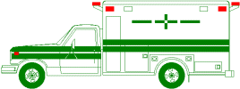
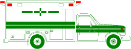
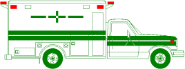
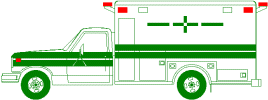
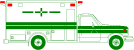
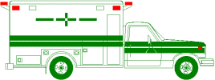

 

Annual Report of the
K E M P S V I L L E V O L U N T E E R R E S C U E S Q U A D
 

V I R G I N I A B E A C H , V A .
|
Our Mission Our Vision |
CONTENTS
Our Programs
Our Past
Our Present
Our Future
Recent Accomplishments
Current Directors and Officers
Administrative Details and Finances
Mailing Address and Phone Numbers
Street Address and Map